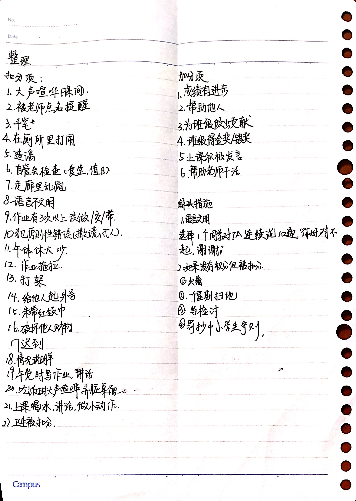

说了这么多，还没介绍我。我姓廖。我爱打篮求,唱,跳,rap等等。我的好朋友有柏**,邵**，谢**，尹**，等。我还经常幻想家里能养鲨鱼。今年11岁。在上海上初中。 我的B站号是@八卦鱿鱼。
哔哩哔哩个人主页
（ 欢迎关注我，私信我）
要不断的努力，才能成为更好的自己
我很喜欢的一个动漫电影，玩具总动员里面的第四部，讲述的事胡迪深知自己在这个世界上的使命，就是照顾他的主人，无论是原来的安迪还是新主人邦妮。当邦妮将不情愿成为玩具的“叉叉”带回家时，胡迪又担起了教导叉叉接受自己新身份的责任。 然而当邦妮将所有玩具带上房车家庭旅行时，胡迪与伙伴们将共同踏上全新的冒险之旅，领略房间外面的世界有多广阔，甚至偶遇老朋友牧羊女。在多年的独自闯荡中，牧羊女已经变得热爱冒险，不再只是一个精致的洋娃娃。正当胡迪和牧羊女发现彼此对玩具的使命的意义大相径庭时，他们很快意识到更大的威胁即将到来。
班级琐事（一周一更新）
1.这周我们春游了，去苏州华谊兄弟，但是只玩了三个小时(加上吃饭四小时)，所以只玩了两个项目。我们班有个人玩密室逃脱时丢了500，让我们为她的钱包默哀3秒。
2.这周三我值日的时候本来想把我们班的一个CP放到网站上，但寻求建议时遭到拒绝。这也不奇怪，毕竟他们不是镇CP，但莫名其妙传了起来，希望这种传谣行为早日停止
3.这周五将执行的由杜大班长制定的积分奖惩规则：
